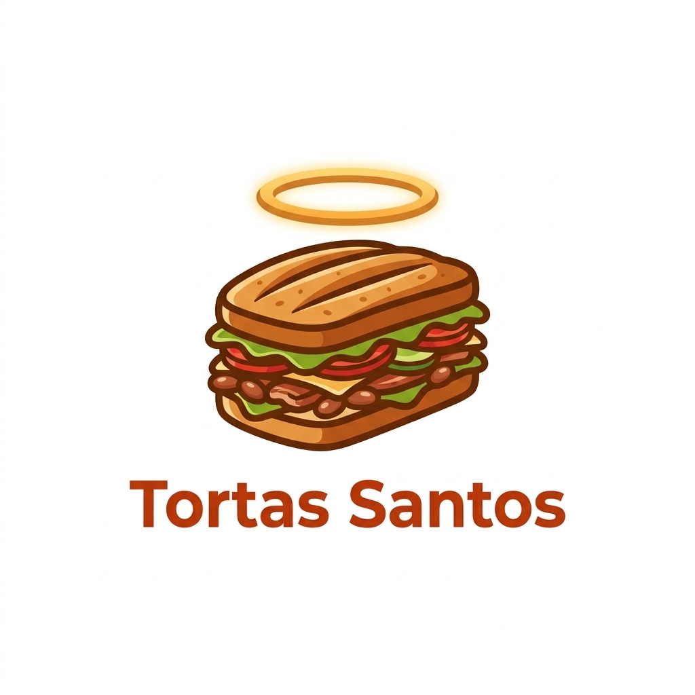

Tortas Santos
Tortería Mexicana · Sabor Tradicional y Económico
conectado
Todos
Tortas Clásicas
Especiales
Bebidas y Extras
Nuestro Catálogo
Tu Carrito de Compras
El carrito está vacío.
Total: $0.00
Sincronizar Pedido
Notificaciones de Ofertas y Pedidos
Activar Notificaciones
Ubica Nuestra Sucursal
Calcular Ruta a Tortas Santos